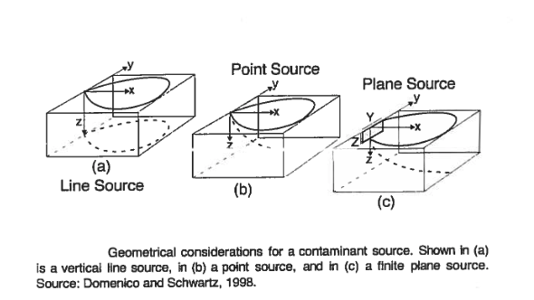

Domenico-Robbins Solutions#
Domenico and Robbins (1985) conjectured that orthogonal (1D) solutions could be combined using superposition (and convolution) to create approximations to 3D behavior for simple, but useful geometries such as

The Domenico-Robbins (1985) solution is a heuristic simplification of an analytical solution to the advection-dispersion equation with sorption and reaction terms that can be programmed into spreadsheets or scripting environments without a full commitment to learning … The simplification comes with advantages that make it a reasonable alternative to exact solutions for simulations representative of many realistic scenarios.
Applications and Significance#
The 2D/3D Domenico solutions have been widely used by regulators, practitioners, and researchers due its ease of use and analytical origin. However, the lack of mathematical rigor in its derivation has raised questions about its accuracy with differing conclusions about its suitability for continued use.
It has been used as a regulatory tool as recently as 2014 (e.g. User’s Manual for the Quick Domenico Groundwater Fate-and-Transport Model (2014) Pensylvania Department of Environmental Protection).
Its significance lies in its ability to provide a rapid approximation of groundwater contamination scenarios, allowing for improved decision-making and risk assessment. As already stated there is criticism that the Domenico solution is unsuitable for use in professional and research applications because of departures from exact solutions under certain conditions.
Note
Given that all models are approximations its kind of a sorry critique. If you are modeling for real money, it would be prudent to apply multiple tools and not make decisions using only these analytical solutions.
… there is no need to ask ‘is the model true?’ The answer is ‘No.’ The only question of interest is ‘Is the model illuminating and useful?’ (Box, 1979 )
It is worth noting that the strongest argument against use of the Domenico solution is that modern computers and readily available $oftware can provide users with exact solutions or well established numerical models so there is no justification for using anything less. This position has some merit where decisions of weight with financial or environmental consequences depend on the modeling result.
As a side note readily available $oftware is NOT easy to install and use; the graphical interfaces tend to tied to specific architecture (x86-64) and specific operating systems. Hence availability does not imply the tools will get used - these simplified models still have value and will for a long time.
Yuan (1995) examined the “mathematical rigor” and provides detailed derivations of various solutions using convolution of elementry solutions (Carslaw and Jaeger 1959). While not at all resolving the critique, it provides interested readers with background and insight into the Domenico solution approximation(s).